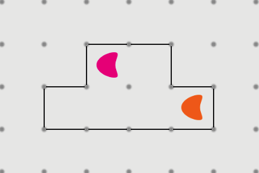

What is Echo?
As the name suggests, Echo is a musical game. Each of the levels is an original song
which you can unlocked part by part. If you get 3 stars on a level, you can REMIX
that track and hear it together with the rest of the song.
I can't rotate the pieces.
This is a novel technique and we
realize that it can be difficult at first. Though once you
get used to it, it's quite fast.
To rotate a piece double tap on it when it's on the board.
1. 2. If you keep your finger down on the second tap, you'll see a circle
with arrows appear over the piece. Now you can drag your finger in any of the
four directions indicated by the arrows. North. South. East. West.
Keep your finger down and you can keep dragging to test out a few directions.
I'm stuck on the fifth level!
A lot of people get stuck here. The solution is to place the pink piece on the top row
and the orange piece on the bottom.

You'll notice that the top row is only 2 squares wide
and the bottom row is 4 squares wide. This gives the pink piece a 2 beat loop which
makes it hit twice as fast as the orange which cycles every 4 beats.
Do the pattern hints ever turn off?
After the 6th song, hints turn off and each level takes much more attention to detail.
Echo barely works or crashes on my iPhone 3S/4.
We're sorry, because of the realtime audio and graphics, Echo is only supported on iPhones 4S and newer.
It will not work on older devices.
Can I still play online?
Yes. You can still play
Echo online.
But for the best mobile experience, get the app.
Will it be available in the Play Store?
Yes. We are developing an Android version as well.
Other questions/comments/bugs?
Please fill out
this form to give us additional feedback.